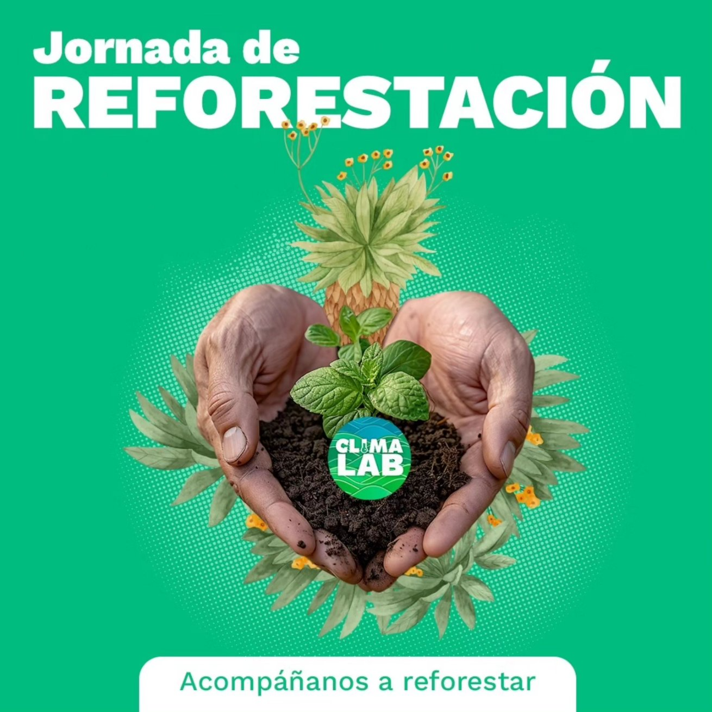
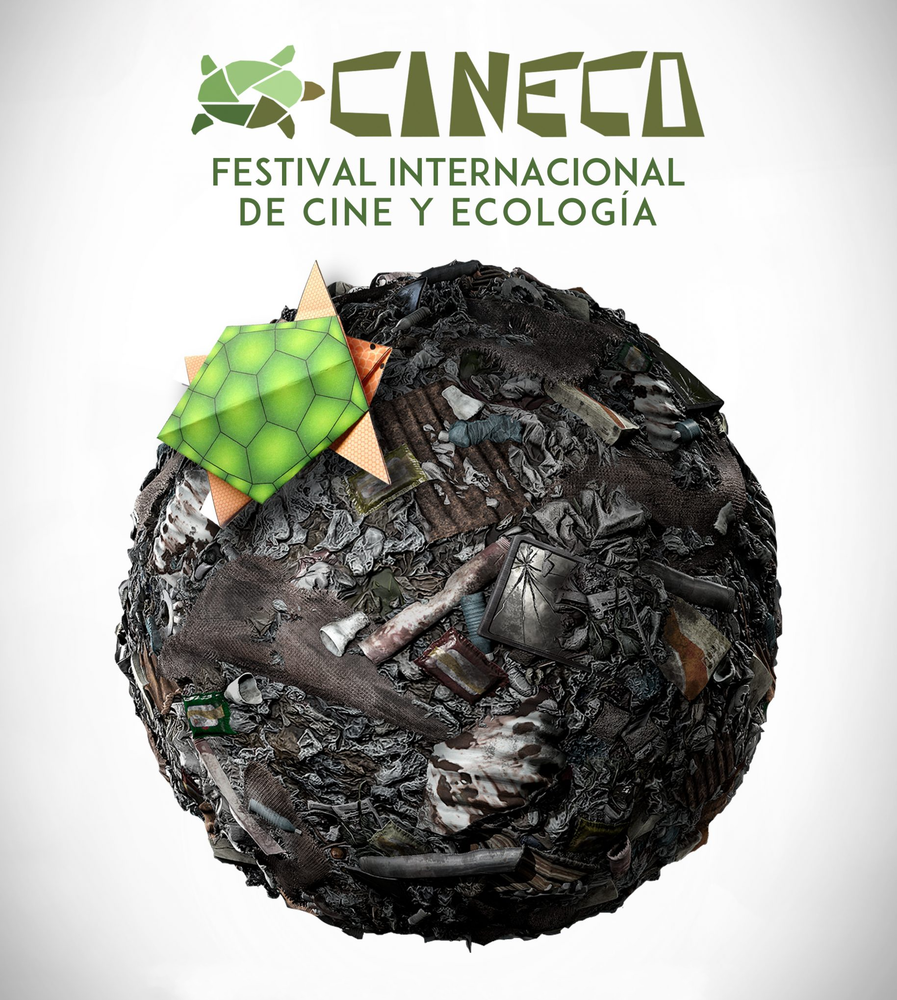
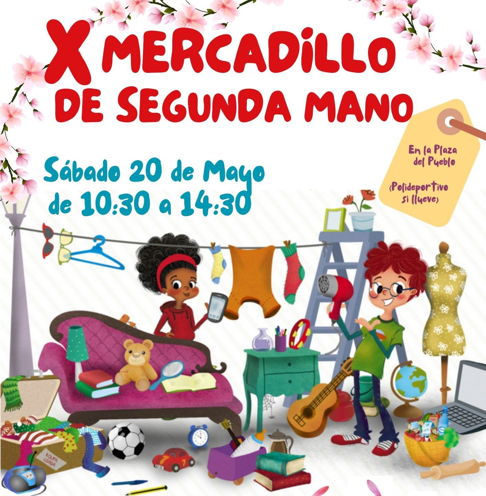
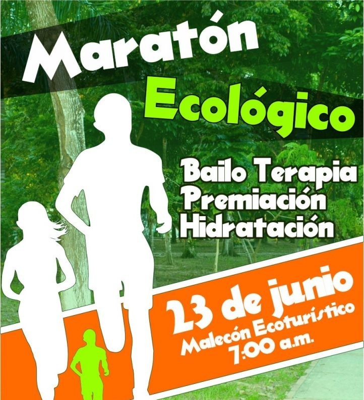

Eventos Sostenibles 2025
 |
Cumbre de Energía Renovable | 20 y 21 Septiembre 2025 | Conferencia de las Naciones Unidas sobre el Cambio Climático, también llamada COP30, es una conferencia desarrollada anualmente desde el primer acuerdo climático de la ONU en 1992, donde los gobiernos del mundo se juntan para acordar políticas para limitar el aumento de la temperatura global y frenar el cambio climático. |
 |
Jornada de Reforestación | 27 - 29 Junio 2025 | Evento que tiene 2 objetivos: el primero es plantar nuevos árboles en áreas donde éstos se requieren y el segundo objetivo es que los participantes sean conscientes de la importancia y el cuidado que los árboles requieren para sobrevivir y desarrollarse. |
 |
Festival de Cine Ambiental | 25 - 31 Agosto 2025 | Festival dedicado a cortometrajes (ficción y documental) que tratan temas ambientales como el cambio climático, el calentamiento global, la extinción de especies, las acciones del Cuerpo de Paz o el activismo. |
 |
Mercado de Segunda Mano | 20 Mayo 2025 | Un espacio en el que los vecinos del municipio pueden poner a la venta aquellos artículos que ya no utilizan y de los que quieren deshacerse. Además, es un modelo de negocio al que todo el mundo tiene acceso tanto en la modalidad de compra como en la de venta, a precios más asequibles. |
 |
Maratón Ecológico | 23 Junio 2025 | Evento deportivo para todo el público, con el objetivo de recaudar dinero para la reforestación y la limpieza de zonas verdes. |